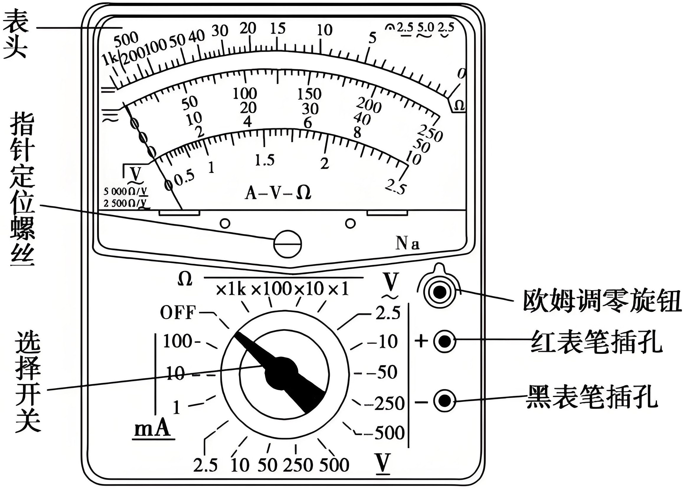

学考专题复习-实验
学考复习
有效数字
有效数字是从数字的第一个非零位开始，直到最后一位（包括零）的所有数字。例如：
- 1234 有 4 位有效数字。
- 0.0056 有 2 位有效数字（忽略前导零）。
- 7.8900 有 5 位有效数字（后面零是有效的，因为有小数点）。
必修三
导体电阻率的测量
R=\rho \frac{l}{s}
游标卡尺
读数：若 x 表示为主尺读出来的毫米数， n 表示为副尺上读出与主尺上某一刻线对齐的游标刻线的格数，则记录结果表达为 (x+n\times 精确度)\; \mathrm{mm}。
螺旋测微器
读数：测量值(\mathrm{mm})=固定刻度数(\mathrm{mm})+可动刻度数\times 0.01\;\mathrm{mm} (可动刻度数要估读)
电流表和电压表
根据最小分度读数
- 精确度是1、0.1、0.01的要估读到下一位；
- 精确度是 2、0.2、0.02 或者 5、0.5、0.05 的读到本位。
分压式与限流式接法
| 限流式 | 分压式 | |
|---|---|---|
| 原理 | 通过滑变电阻限制整个电路的电流，调节 R 的电流 | 通过调节并联电路的分压比例，调节 R 的电压 |
| 滑变电阻最大阻值 R_{0} | R_{x} 的 2\sim10 倍 | R_{0}<2R_{x} |
| R_{x} 端电压范围 | \left[ \frac{R_{x}}{R_{x}+R_{滑max}}E ,E\right] | [0，E] |
| 优势 | 电路简单，节能 | 电压变化范围大 |
练习使用多用电表
多用电表使用前后注意事项
- 使用前，应调整指针定位螺丝，使指针指到左端零刻线
- 使用完毕，应将选择开关旋转到 OFF 档或交流电压最高档
欧姆档使用事项

欧姆档特点
- 从右向左读数
- 刻度不均匀
- 欧姆挡是倍率挡
思考
测量电阻时，指针偏角过小或偏角过大，该怎么重新选择倍率？
- 从右向左读数：右 R=0，左 R=\infty
- 刻度不均匀：右疏左密，指针应指在中央刻度附近读数 (倍率选择：合适的倍率为表针落在中间区域)
- 欧姆挡是倍率挡(区别于量程档)：阻值 = 指针示数\times倍率
欧姆表读数注意事项
- 测量前要进行欧姆调零：将红、黑表笔直接接触（俗称“短接”），调节欧姆调零旋钮，使指针指向 “ 0 ” 欧姆位置。
- 换挡后，要再次进行欧姆调零！
- 测电阻时一定要断开电路连接！
电池电动势和内阻的测量
电路图
测量原理
根据闭合电路欧姆定律
\begin{aligned} E & =U_{\text{外}}+U_{\text{内}}\\ & =U_{\text{外}}+Ir \end{aligned}
整理得
U_{\text{外}}=-r\cdot I+E
类比一次函数的解析式
y=kx+b
误差分析
| 测量电路 | 内接法 | 外接法 |
|---|---|---|
| 误差原因 | 电流表分压 | 电压表分流 |
| 等效 | 电流表和电源串联成一个新电池 | 电压表和电源并联成一个新电池 |
| 测量结果 | E 不变，r'=r+R_{A} | E 、r 都偏小 |
| 适用 | 内阻较大的电池 | 内阻较小的电池 |